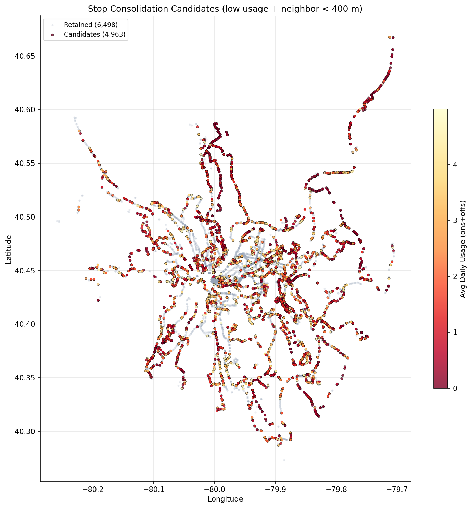
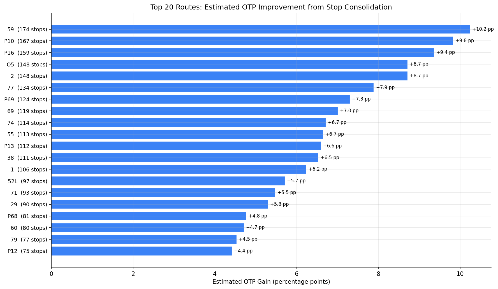

Analysis
31 - Stop Consolidation Candidates
Equity and Strategic Planning
Coverage: 2019-01 to 2025-11 (from otp_monthly).
Built 2026-03-20 19:31 UTC · Commit 1ffb273
Page Navigation
Analysis Navigation
Data Provenance
flowchart LR
31_stop_consolidation(["31 - Stop Consolidation Candidates"])
f1_31_stop_consolidation[/"data/bus-stop-usage/wprdc_stop_data.csv"/] --> 31_stop_consolidation
t_otp_monthly[("otp_monthly")] --> 31_stop_consolidation
01_data_ingestion[["Data Ingestion"]] --> t_otp_monthly
t_route_stops[("route_stops")] --> 31_stop_consolidation
01_data_ingestion[["Data Ingestion"]] --> t_route_stops
t_routes[("routes")] --> 31_stop_consolidation
01_data_ingestion[["Data Ingestion"]] --> t_routes
d1_31_stop_consolidation(("numpy (lib)")) --> 31_stop_consolidation
d2_31_stop_consolidation(("polars (lib)")) --> 31_stop_consolidation
d3_31_stop_consolidation(("scipy (lib)")) --> 31_stop_consolidation
classDef page fill:#dbeafe,stroke:#1d4ed8,color:#1e3a8a,stroke-width:2px;
classDef table fill:#ecfeff,stroke:#0e7490,color:#164e63;
classDef dep fill:#fff7ed,stroke:#c2410c,color:#7c2d12,stroke-dasharray: 4 2;
classDef file fill:#eef2ff,stroke:#6366f1,color:#3730a3;
classDef api fill:#f0fdf4,stroke:#16a34a,color:#14532d;
classDef pipeline fill:#f5f3ff,stroke:#7c3aed,color:#4c1d95;
class 31_stop_consolidation page;
class t_otp_monthly,t_route_stops,t_routes table;
class d1_31_stop_consolidation,d2_31_stop_consolidation,d3_31_stop_consolidation dep;
class f1_31_stop_consolidation file;
class 01_data_ingestion pipeline;
Findings
Findings: Stop Consolidation Candidates
Summary
43% of all stop-route combinations in the PRT system see fewer than 5 daily boardings+alightings on weekdays, and nearly all of these have a same-route neighbor within 400 m walking distance. Removing these low-usage stops could yield an average OTP improvement of +3.2 percentage points per route, with the highest-impact routes gaining up to +10 pp. The top candidates are long suburban/flyer routes with many lightly used stops along corridors.
Key Numbers
- 11,461 stop-route combinations in the pre-pandemic weekday data
- 4,991 (43%) are low-usage (< 5 avg daily ons+offs)
- 4,963 of those have a neighbor on the same route within 400 m (consolidation candidates)
- 87 of 90 routes (97%) matched to OTP data have at least one candidate
- Median candidates per route: 44 stops
- Regression slope: each stop removed is associated with +0.059 pp OTP
- Average estimated OTP gain: +3.2 pp across routes with candidates
- Maximum estimated OTP gain: +10.2 pp (Route 59, Mon Valley -- 174 candidate stops)
Observations
- Flyer/express routes have the most candidates: P10 (167), P16 (159), O5 (148) -- these long-distance routes serve many stops with minimal usage along the way.
- Route 59 (Mon Valley) tops the list with 174 candidates out of 334 stop-route pairs, representing a potential 52% reduction in stops.
- The candidate map shows candidates distributed system-wide, with particularly dense clusters in outer suburban corridors where stop spacing is tight but usage is low.
- Almost all low-usage stops (99.4%) have a nearby neighbor, meaning very few riders would lack a within-walking-distance alternative.
- The OTP gain estimate is conservative: the regression slope (-0.059 pp/stop) comes from cross-sectional variation, not from an experiment. Actual gains from targeted consolidation could differ.
Discussion
What the data shows
Analysis 07 established that stop count is the strongest single predictor of poor OTP (r = -0.53), and this analysis shows that nearly half the system's stop-route pairs see trivially low usage. The correlation between stop count and OTP is real and robust across multiple specifications.
The concentration of candidates on flyer routes (P10, P16, O5) is intuitive: these routes traverse long suburban corridors where stops were placed at frequent intervals to maximize coverage, but actual demand clusters at a few park-and-ride or transfer locations.
Why the OTP gain estimate is likely overstated
The +3.2 pp average gain estimate assumes each stop removed saves equivalent time, but PRT bus drivers already skip stops where no one is waiting and no one has signaled to alight. A low-usage stop with <5 daily boardings is empty on the vast majority of individual bus trips, meaning the bus already passes it without stopping most of the time. Removing the sign does not change this operational reality.
The cross-sectional regression slope (-0.059 pp/stop) captures the fact that routes with many stops are structurally different -- they are longer, serve denser urban corridors with more traffic signals, and have higher cumulative probability of someone being at the next stop. These are route design characteristics, not marginal effects of individual stops. The causal effect of removing a single low-usage stop is likely well below the regression estimate.
Analysis 34 (Ridership Concentration) reinforces this interpretation: per-stop ridership concentration has no correlation with OTP (r = -0.016, p = 0.88), suggesting dwell time from passenger volumes is not the dominant mechanism. The stop count/OTP relationship is better understood as a proxy for route design philosophy (local vs limited-stop vs express) rather than a per-stop causal lever.
Accessibility and equity concerns
The 400 m walk-distance filter assumes riders can walk to the next stop, but this may not hold for riders with disabilities, elderly riders, or those with mobility limitations -- particularly given Pittsburgh's hilly terrain. ADA compliance is not just a legal requirement but a core service obligation. Any consolidation program would require stop-by-stop accessibility review. Some low-usage stops may also serve riders making short trips where incremental stop spacing is the primary value of the bus service.
Reframing the finding
The stop count/OTP relationship is best read as evidence that route design with fewer, better-spaced stops outperforms local-stop design -- which is already reflected in the busway/express vs local gap (Analysis 02). The policy implication points more toward limited-stop or express overlays on high-ridership corridors than toward individual stop removal. Converting low-usage suburban segments to limited-stop service (as the flyer route candidates suggest) is more defensible than piecemeal stop removal, because it redesigns the service pattern rather than degrading existing local coverage.
Stop consolidation remains politically sensitive. Community opposition to stop removal often exceeds what ridership data would justify. A phased approach -- starting with stops below 1 rider/day that have a neighbor within 200 m, with accessibility review -- would minimize controversy while testing whether actual OTP gains materialize.
Caveats
- The OTP gain estimate is likely overstated because buses already skip empty stops operationally; removing the sign at a stop that is already being passed most trips has minimal time savings.
- The regression slope is a cross-sectional system-wide average reflecting route design differences, not a causal per-stop marginal effect. Individual stop removal may have near-zero impact.
- Accessibility: the 400 m walk-distance filter may be inadequate for riders with disabilities or limited mobility, especially on Pittsburgh's hilly terrain. ADA review is required before any consolidation.
- Short trips: some low-usage stops serve riders making short trips where incremental stop spacing is the primary value of the service.
- Stop usage data is from FY2019 (pre-pandemic); current usage patterns may have shifted.
- Some stops may appear low-usage on one route but serve high volumes on other routes at the same physical location; the data is per stop-route, not per physical stop.
- Projected stop counts can go negative for routes where the CSV has more stop-route combinations than the DB stop count (due to different data vintages).
Review History
- 2026-02-27: RED-TEAM-REPORTS/2026-02-27-analyses-31-35.md — 1 significant issue. OTP gain estimates now produced only for bus routes; non-bus routes set to null (bus-only regression slope not applicable to rail/busway). METHODS.md updated to reflect independent slope computation.
Output

scatter map of candidate stops colored by usage.

bar chart of estimated OTP improvement per route.
No interactive outputs declared.
per-stop detail: stop, route, usage, nearest neighbor distance, candidate flag.
Preview CSV
per-route summary: current stops, candidates, projected new stop count, estimated OTP gain.
Preview CSV
Methods
Methods: Stop Consolidation Candidates
Question
Which low-usage bus stops are candidates for consolidation, and how much OTP improvement could each route expect from fewer stops?
Approach
- Use pre-pandemic weekday stop-level ridership (datekeys 201909 and 202001) as a stable baseline, averaging across the two periods.
- Compute average daily boardings + alightings per stop-route combination.
- Flag stops with average daily usage below a threshold (< 5 total ons+offs per weekday).
- For each low-usage stop on a route, compute haversine distance to the nearest other stop on the same route. If a neighbor exists within 400 m, the stop is a consolidation candidate (riders can walk to the next stop).
- Per route: count current stops, count candidates, compute the potential reduced stop count.
- Compute the stop-count/OTP regression slope independently (bus-only) and apply it to estimate the OTP benefit from consolidation. OTP gain estimates are produced only for bus routes; non-bus routes are included in the summary but flagged as not applicable for the bus-derived slope.
- Generate per-route summary, system-wide statistics, and a chart of estimated OTP gains.
Data
| Name | Description | Source |
|---|---|---|
wprdc_stop_data.csv |
Stop-level boardings/alightings by route, period, and day type | Local CSV (data/bus-stop-usage/) |
route_stops |
Current route-stop assignments and stop locations | prt.db table |
stops |
Stop coordinates (lat/lon) | prt.db table |
otp_monthly |
Monthly OTP per route (for current performance baseline) | prt.db table |
routes |
Route name and mode | prt.db table |
Output
output/consolidation_candidates.csv-- per-stop detail: stop, route, usage, nearest neighbor distance, candidate flagoutput/route_consolidation_summary.csv-- per-route summary: current stops, candidates, projected new stop count, estimated OTP gainoutput/otp_gain_by_route.png-- bar chart of estimated OTP improvement per routeoutput/candidate_map.png-- scatter map of candidate stops colored by usage
Sources
| Name | Type | Why It Matters | Owner | Freshness | Caveat |
|---|---|---|---|---|---|
| data/bus-stop-usage/wprdc_stop_data.csv | file | Referenced via DATA_DIR path composition in analysis script. | Local project data owner not specified. | Snapshot file; refresh by rerunning its pipeline step. | May lag upstream source updates. |
| otp_monthly | table | Primary analytical table used in this page's computations. | Produced by Data Ingestion. | Updated when the producing pipeline step is rerun. | Coverage depends on upstream source availability and ETL assumptions. |
| route_stops | table | Primary analytical table used in this page's computations. | Produced by Data Ingestion. | Updated when the producing pipeline step is rerun. | Coverage depends on upstream source availability and ETL assumptions. |
| routes | table | Primary analytical table used in this page's computations. | Produced by Data Ingestion. | Updated when the producing pipeline step is rerun. | Coverage depends on upstream source availability and ETL assumptions. |
| numpy | dependency | Runtime dependency required for this page's pipeline or analysis code. | Open-source Python ecosystem maintainers. | Version pinned by project environment until dependency updates are applied. | Library updates may change behavior or defaults. |
| polars | dependency | Runtime dependency required for this page's pipeline or analysis code. | Open-source Python ecosystem maintainers. | Version pinned by project environment until dependency updates are applied. | Library updates may change behavior or defaults. |
| scipy | dependency | Runtime dependency required for this page's pipeline or analysis code. | Open-source Python ecosystem maintainers. | Version pinned by project environment until dependency updates are applied. | Library updates may change behavior or defaults. |